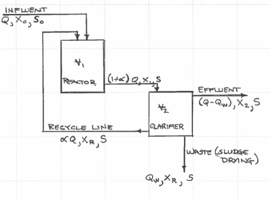

Example: Reactor-Tank System¶
Consider a biological reactor system using the two-vessel feedback schematic in the Figure below. The system uses influent substrate, \(S\), as an energy source (think food) to grow biomass, \(X\), in the first vessel. The mixed liquor is then transferred to a clarifier tank where the liquid is decanted and the biomass is concentrated. The decanted liquid is returned to the environment (you can visualize the diagram as a water treatment system, where the substrate is some pollutant). The concentrated biomass is recycled back to the reactor tank as a way to ensure that the biomass population is sufficient for substrate removal.

In practice a portion of the concentrated biomass is wasted from the system to maintain constant system volumes (and control sludge age and other important features exogenous to the example).
Problem Statement¶
Suppose that the cost per vessel is a function of the vessel volume in gallons and is expressed as
The equilibrium inflow conditions are :
\(Q= 1\times10^6\) gallons per day,
\(S_0 = 200\) ppm, and \(X_0 = 0\) ppm.
Note
\(S\) is the concentration of the substrate or pollutant; \(X\) is the concentration of biosolids that have been grown from the substrate.
Further suppose that the system design guidelines call for:
the clarifier overflow loading rate to be \(Q_O = 800\) gal/day/ft\(^2\),
the clarifier depth \(h\) to be 8 feet, and
the effluent substrate concentration to be \(S=20\) ppm.
Suppose that your past design experience with similar systems suggests:
a cell growth rate of \(\mu = 1.876\) days\(^{-1}\),
and a biosolids yield coefficient \(Y = \frac{X}{S} = 0.449\).
Using this information design a minimum cost reactor system to satisfy the desired output water quality.
Analysis and Mathematical Model Construction¶
The reactor mass balance is used to establish various constraints for the problem.
The biosolids mass balance is: $\( V_1 \frac{dX_1}{dt} = QX_0 +\alpha Q X_R - (1+\alpha) QX_1 + \mu X_1 V_1 \)$
Now divide by \(V_1\) to obtain: $\( \frac{dX_1}{dt} = \frac{Q}{V_1}X_0 +\alpha \frac{Q}{V_1} X_R - (1+\alpha) \frac{Q}{V_1}X_1 + \mu X_1 \)$
Introduce the hydraulic retention time of the reactor as \(T_1 = \frac{V_1}{Q}\), and substitute this value into the equation to obtain:
The substrate (pollutant) mass balance is:
Now divide by \(V_1\) to obtain:
Again substitute the hydraulic retention time to obtain:
Repeat the mass balance analysis for the clarifier, in the clarifier we assume there are no further reactions so the substrate concentrations that enter the clarifier leave undiminished, so we only consider the biosolids within the clarifier.
The clairifier biosolids mass balance is:
At equilibrium,
Apply this condition to the three equations, first the reactor biosolids balance,
Multiply by the hydraulic retention time to obtain:
Next the substrate balance,
Again multiply by the hydraulic retention time to obtain: $\( {S_0} +\alpha {S}- (1+\alpha) {S} - \frac{\mu}{Y} X_1 T_1 = 0 \)$
Combine the terms involving \(S\) to obtain $\( X_1 T_1 = \frac{Y}{\mu}(S_0 - S) \)$
Next the clarifier biosolids balance: $\( (1+\alpha)QX_1 -(Q-Q_w)X_2 -(\alpha Q + Q_w)X_R = 0 \)$
Expand and divide by \(Q_w\) to obtain: $\( \frac{QX_1 + \alpha QX_1 - QX_2 + Q_wX_2 - \alpha Q X_R - Q_w X_R}{Q_w} = 0 \)$
Factor out and isolate \(X_2 - X_R\) to obtain: $\( \frac{Q}{Q_w}[X_1 + \alpha X_1 - X_2 - \alpha X_R] = X_R - X_2 \)$
Refactor to obtain $\( \frac{(1 + \alpha) X_1 - X_2 - \alpha X_R}{X_R - X_2} = \frac{Q_w}{Q} \)$
The equations for the reactor biosolids balance, the reactor substrate balance , and the clarifier biosolids balance are now employed to build a meaningful constraint set from the performance guidelines.
Multiply the reactor biosolids balance, by the hydraulic retention time to obtain: $\( 0 = {X_0}T_1 +\alpha {X_R}T_1 - (1+\alpha) {X_1}T_1 + \mu X_1 T_1\cdot T_1 = 0 \)$
Now substitute the reactor substrate balance into the result above to obtain: $\( 0 = {X_0}T_1 +\alpha {X_R}T_1 - (1+\alpha) \frac{Y}{\mu}(S_0-S) + Y(S_0-S) T_1 = 0 \)$
Now refactor the result to obtain: $\( [{X_0} +\alpha {X_R}+ Y(S_0-S) ]T_1 - \alpha \frac{Y}{\mu}(S_0-S) = \frac{Y}{\mu}(S_0-S) ~~~~^{**} \)$
Again, rewrite reactor biosolids balance as $\( {X_0} + \mu X_1 T_1 = (1+\alpha) {X_1}-\alpha {X_R} \)$
Substitute into clarifier biosolids balance to obtain: $\( \frac{X_0 + \mu X_1 T_1 - X_2}{X_R - X_2}=\frac{Q_w}{Q} \)$
Now substitute Equation the reactor substrate balance to obtain: $\( \frac{X_0 + Y(S_0-S) - X_2}{X_R - X_2}=\frac{Q_w}{Q} \)$
Here we have removed any dependency on \(T_1\) and \(\alpha\) which are the design variables, so the only mass balance constraint is \(^{**}\).
Optimization Problem¶
Using the constraints and performance criteria we can construct the optimization problem as
Now for the particular problem we will substitute in numerical values from the known quantities.
\(Q = 1 \times 10^{6}\) thus
\(25.12(\frac{Q \cdot h}{Q_0})^{0.6}=25.12(\frac{1\times 10^6 \cdot 8}{800})^{0.6}=6309.9\), and
\(25.12 (Q)^{0.6} = 25.12 (1\times 10^6)^{0.6} = 100,010\).
The remaining values are \(X_0 = 0\), \(X_R = 10,000\), \(S_0 = 200\), and \(S = 20\).
The resulting non-linear program in the design variables \(T_1\) and \(\alpha\) is